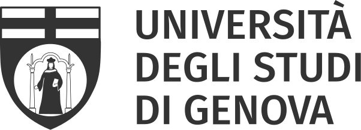

Our Team
The BIONIC project is led by an interdisciplinary team of researchers from partner institutions, combining expertise in neuromorphic engineering, computational neuroscience, and data analytics. We are committed to pushing the boundaries of what's possible at the intersection of biology and technology.
View on GitHubNetwork Partners

Università di Genova
Prof. Michela Chiappalone
Contact
Contact
Universität Zürich
Prof. Elisa Donati
Contact
Contact
University of Bordeaux
Prof. Timothée Levi
Contact
Contact